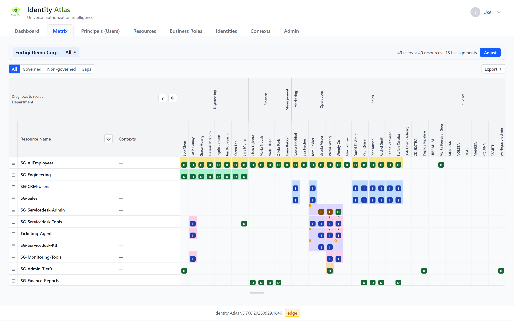
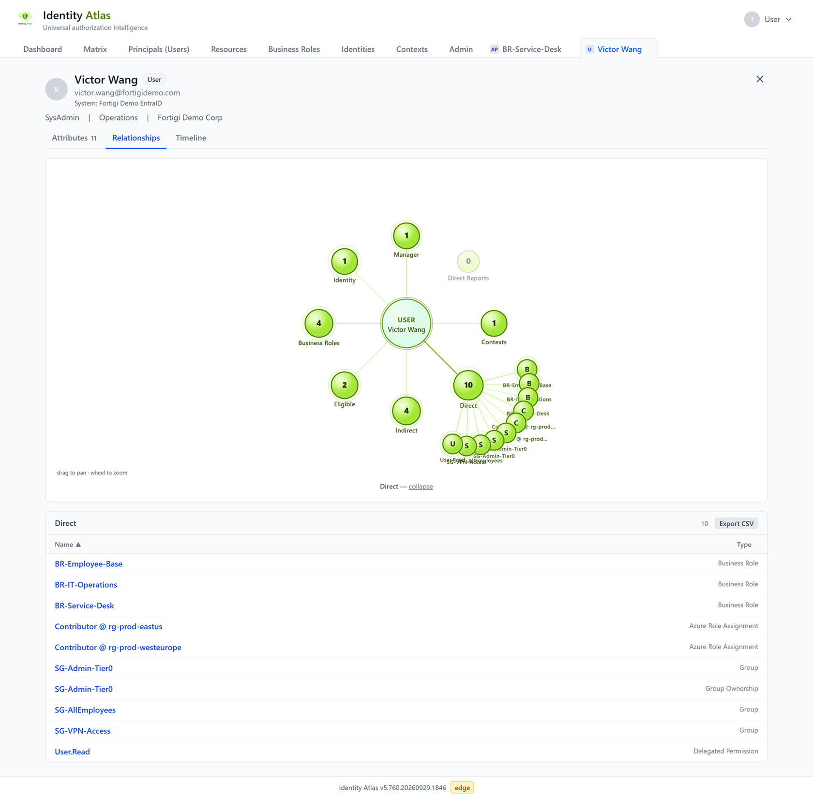
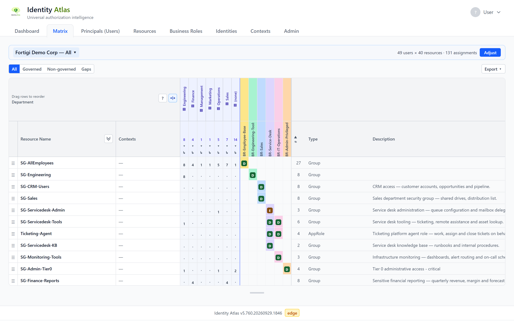
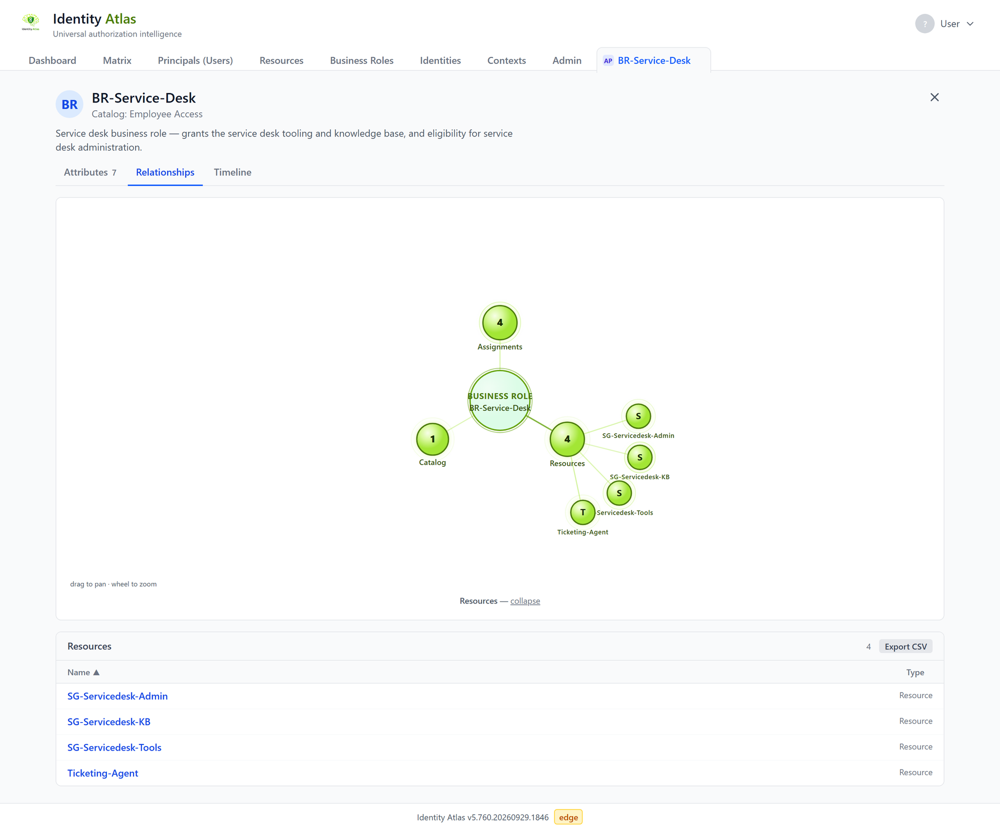
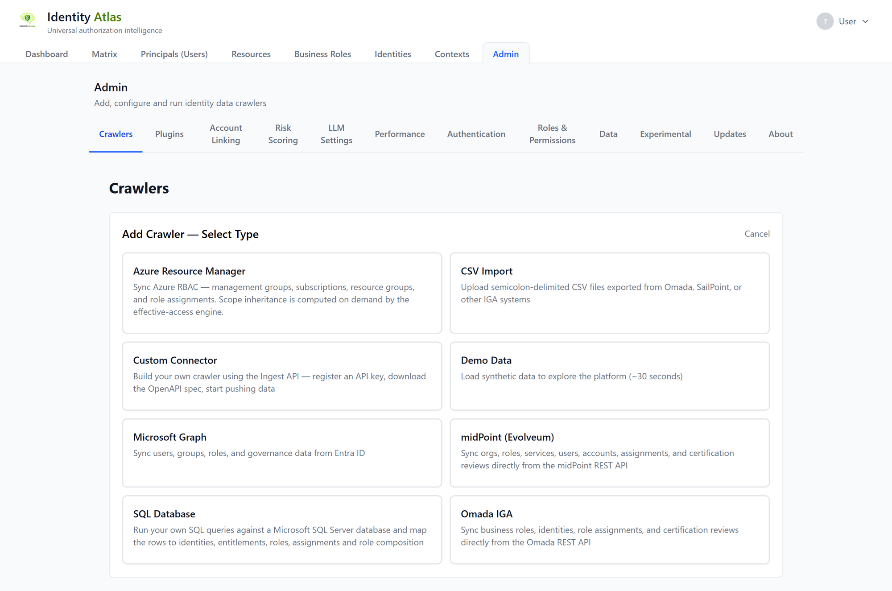

The app at a glance¶
Before this page
Assumes you have read The words you need first — the eight minutes that make the rest of this readable.
Identity Atlas is a web application: you open it in a browser and everything you do with the loaded data happens there. This page is the map. It says what each tab is for and points to the page that explains it in detail.

The tabs¶
The app opens on the Dashboard. The navigation bar holds these tabs:
| Tab | What it is for | Shown |
|---|---|---|
| Dashboard | What is loaded, whether the key features are set up, and trends over time | Always |
| Matrix | Who holds what, as a grid you scope yourself | Always |
| Principals (Users) | Every account, of people and of software | Always |
| Resources | Everything that grants access | Always |
| Systems | The systems the data comes from | When you switch it on |
| Business Roles | Business roles and access packages from your governance platform | Always |
| Risk Scores | Accounts, resources and roles ranked by risk | When an administrator has switched risk scoring on |
| Identities | People, with the accounts that belong to each | When you switch it on (offered while account linking is on) |
| Contexts | Groupings such as departments, applications and tags | When you switch it on |
| Reports | Ready-made and self-built reports | Always |
| Logs | What ran and when: crawler syncs, plugin runs, account linking, risk scoring | When you switch it on |
| Admin | Crawlers, sign-in, permissions and other settings | When you hold an administrative permission |
Showing the optional tabs¶
Systems, Identities, Contexts and Logs are hidden until you ask for them. Click your name in the top-right corner and use the switches under Visible Tabs. The choice is yours alone and is remembered for your account. The same menu holds the Light / Auto / Dark theme choice and Sign out.
Detail tabs¶
Clicking a name anywhere in the app (an account, a resource, a business role, an identity, a context) opens that record in a tab of its own, next to the tabs above. Several can be open at once; each has a close button, and its address can be bookmarked.
An account, resource, business role or identity page has the same set of views:
- Attributes: everything the source says about the record.
- Relationships: a graph of what the record is connected to. Click a node to list what is in it.
- Timeline: what changed, and when.
- Diff: the record now, next to how it was at a moment you pick.
- Risk: the risk score and what produced it (only while risk scoring is on and the record has a score).

Dashboard¶
The landing page. Overview shows the counts of everything that is loaded and the state of risk scoring, certifications and crawlers. Trends shows how those numbers moved over time. See Dashboard.
Matrix¶
The grid of who holds what. By default the resources are the rows and the people or accounts are the
columns; a cell shows how the access is held: D for Direct, I for Indirect, E for Eligible.
The matrix never shows everything at once. With no matrix open, the tab lists the saved matrices under Open a matrix and offers New matrix. A new matrix is built in a wizard with four steps:
- Subjects: one column per user account, or one per identity (a person across all their accounts), and which of them.
- Resources: which resources, and whether each business role also gets a row of its own with the resources it grants under it.
- Layout: how the columns are grouped and sorted, whether they are rolled up into counts per department or other attribute, and what the matrix opens with.
- Save & share: show the matrix as it is, or give it a name to save it and share it.
The strip above an open matrix names it and has Adjust, which reopens the wizard on that matrix.
Two controls are easy to confuse because both are about business roles:
- Whether business roles are in the grid is part of what the matrix contains. You choose it on the wizard's Resources step.
- The lens (All / Governed / Non-governed / Gaps, above the grid) decides which of the assignments in that grid are highlighted. It changes the view, not the content, and anyone looking at the matrix can switch it.
A cell with a coloured background is governed: a business role grants that access. The ? button in the top-left corner of the grid explains every badge, colour and marker of the matrix you are looking at. Export above the grid downloads the matrix as an Excel file.

More on the matrix:
- Sharing a matrix: handing a matrix to someone who does not use Identity Atlas.
- Contexts: scoping a matrix to a department or an application.
- Who can access resource X, and why: reading inherited access.
- Matrix scope statistics: the optional panel with totals and trends above the grid.
Principals (Users)¶
Every account that was loaded. The sub-tabs split them by kind: Users, Service Principals, Managed Identities and AI Agents, or All together.
- Search by name, and narrow the list with + Add filter.
- Tag the rows you select, or every row that matches the current filters. Click a tag to filter on it.
- Compare two or three accounts side by side: tick them in the list and click Compare, or use Compare with… on an account's page. By default only the attributes and access where they differ are shown.
Click a name to open the account's detail tab.
Filtering on relationships¶
The + Add filter list holds a row's relationships next to its ordinary attributes, and they work the same way: pick the field, pick a value.
- The relationships include Owners and Sponsors (on AI agents, service principals and guests), Manager and Direct reports (on users), Owns agents, and Members and Owners (on groups and other resources).
- The values are counts: None (0), Any (1 or more), Exactly 1, 2 or more, 3 or more. A relationship that can only have one value, such as a manager, offers None and Any. Filter AI Agents on Owners = None (0) to find every agent nobody answers for, or groups on Members = None (0) to find empty groups.
- Only relationships that have data in the list you are looking at are offered.
- Member counts include direct, indirect and eligible members. Accounts that were removed from the source are not counted.
The same filters are on the Resources tab.
Resources¶
Everything that grants access: groups, directory roles, app roles, applications, permissions and more. Search, filter on type or system, and tag rows as on the Principals tab.
A resource's page names its Owner in the header, linked to that person's account when Identity Atlas holds one, and has an Owners node on its Relationships view. The reverse is on the person's page: an Owned Resources node lists what they answer for. Who can access resource X, and why walks through a resource page.
Systems (optional tab)¶
One card per connected system, with what was loaded from it: the number of resources and assignments, the resource types and assignment types it contains, and its owners.
Business Roles¶
The business roles from your governance platform: access packages from Entra ID, business roles from Omada, and their equivalents elsewhere. Search the list, and give each role a category to group the roles; a role has one category at a time.

A business role's page shows who holds the role, which resources it grants, and what the governance platform recorded about it: its assignment policies, access reviews and pending requests.
Important
Access reviews are read-only in Identity Atlas. Decisions are made in the governance platform and shown here.
Risk Scores (when risk scoring is on)¶
Accounts, resources, business roles and identities ranked by a risk score from 0 to 100, with a tier from None to Critical. Open a record's Risk view to see what produced its score and, as an analyst, to adjust it with a written reason.
An administrator switches the feature on and sets it up under Admin → Risk Scoring. Scoring needs an active set of classifiers; once there is one, the scores are recalculated after every crawl, and can also be run by hand from Admin → Risk Scoring. Until scores have been computed the tab says so and offers to run the scoring. See Risk scoring for how a score is built.
Identities (optional tab)¶
The people behind the accounts. Each identity lists the accounts that belong to the same person across systems. Accounts are linked to people by the crawler or by account linking, which an administrator configures under Admin → Account Linking. See Account linking.
Contexts (optional tab)¶
Named groupings of people, accounts, resources or systems: departments, manager hierarchies, applications, tags. You browse and build them here, and use them to scope the matrix and reports.

See Contexts.
Reports¶
Standard reports come with Identity Atlas. Saved views are standard reports with their settings stored under a name. Custom reports are built by people in your organisation; that part is experimental and off until an administrator switches it on. Every report opens in its own tab, runs on the latest data, and can be downloaded.
Logs (optional tab)¶
What ran, when, and how it ended: crawler syncs, plugin runs, account linking and risk scoring. Filter on the kind of run, or search by name or by who started it.
Admin¶
The Admin tab groups the administrative pages. You only see the ones your permissions allow.
| Page | What you do there |
|---|---|
| Crawlers | Add, configure, schedule and run the crawlers that load data |
| Plugins | Manage the rules that derive contexts, and their runs |
| Account Linking | Set the rules that link accounts to people |
| Risk Scoring | Switch risk scoring on and set up the risk profile and classifiers |
| LLM Settings | Choose the language model that risk scoring uses |
| Performance | See how fast the application answers |
| Authentication | Set up single sign-on |
| Roles & Permissions | Decide which roles from your identity provider get which permissions in the app |
| Data | Export and import curated data, and clean the database |
| Shared Matrices | See which matrices are shared by link, with whom, and revoke them (shown while matrix sharing is on) |
| Experimental | Switch on features that are built and tested but not yet proven in the field |
| Updates | Automatic updates and the version history |
| About | Licence, version and the software bill of materials |

Where these are explained: Authentication · Permissions · The Data page · Automatic updates · Experimental features